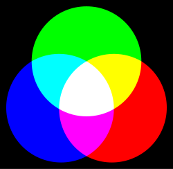
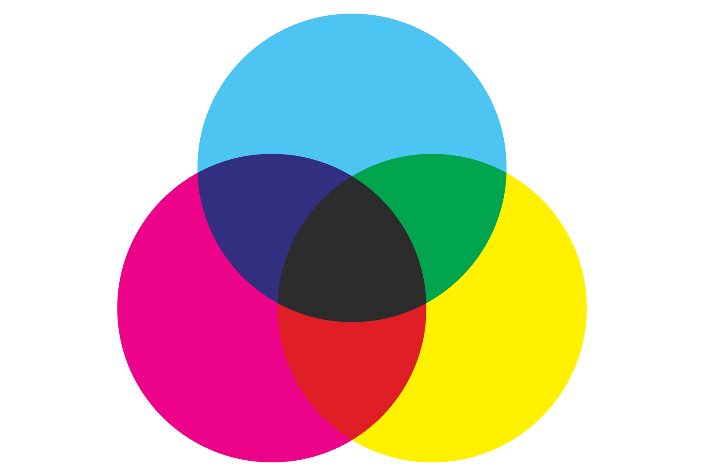

In een computer worden naast letters ook kleuren gecodeerd. Bijvoorbeeld in een telefoon; een telefoon heeft meerdere lenzen, achter deze lens zit een beeldsensor. Dit heet een CCD: charge-coupled-device. Deze beeldsensor bestaat uit miljoenen lichtgevoelige fotocellen. Wanneer er een foto wordt gemaakt met een telefoon wordt er een moment opname gemaakt van al het invallende licht, de sensoren zetten dit om in een elektrisch signaal. Zo een digitale foto wordt afgebeeld in een heleboel pixels, dit zijn vierkante hokjes met een bepaalde kleur. Om dit op te slaan wordt er gebruikgemaakt van kleurmodellen. De twee belangrijkste kleurmodellen zijn het RGB-model en het CMY-model. Het RGB-model wordt gebruikt om kleuren digitaal weer te geven, denk hierbij aan kleuren om een beeldscherm. Het CMY-model wordt gebruikt door printers om digitale bestanden te kunnen afdrukken. Maar hoe ziet zo een pixel er nou uit? Eén zo een pixel bestaat uit drie lampjes in de kleuren: rood, groen en blauw. Deze kleuren vormen de basis voor alle andere kleuren in het RGB-model, dit lijken op de primaire kleuren maar dat zijn het niet, er komen dan ook net wat andere kleuren uit dan bij verf. Door deze gekleurde lampjes feller en zwakker te laten ‘branden’ kunnen verschillende kleuren worden weergegeven. Net als bij verf worden de kleuren gemengt, het mengen van rood en geel bijvoorbeeld, dit wordt oranje.

Dit kleurmodel gebruikt als basis de zwarte kleur, als de lampjes uit zijn is het beeldscherm dan ook zwart. Als alle lampjes aan staan, komt de kleur wit op het scherm. Een computer kan goed werken met getallen, daarom worden de kleuren genoteerd met cijfers van 0-225. Geel wordt bijvoorbeeld genoteerd als: (255, 255, 0). De computer kan deze getallen omzetten naar het binair stelsel (11111111, 11111111, 0).
Klik op deze video voor meer uitleg!
Bij het CMY-model gaat het anders. Als je namelijk iets wilt printen, gebeurt dit vaak op wit papier, het RGB-model gebruikt de zwarte kleur als achtergrond en niet wit, dit moet dus anders. Daarvoor is het Cyan-Magenta-Yellow-model. De naam zegt het al, bij dit model worden de kleuren cyaan, magenta en geel gebruikt, deze gebruikt de wite kleur als basis. Als je deze drie kleuren zou mixen zou het midden donkergrijs worden en niet zwart, maar bij het printen is het wel fijn dat het ook zwart kan printen, daarvoor is er nog een model: CMYK-model. De k staat voor ‘key’ of 'black'. Net als het RGB-model heeft het CMY-model een bepaalde formule om de kleuren aan te geven. De CMY-formule is: (255 - R, 255 - G, 255 - B).
